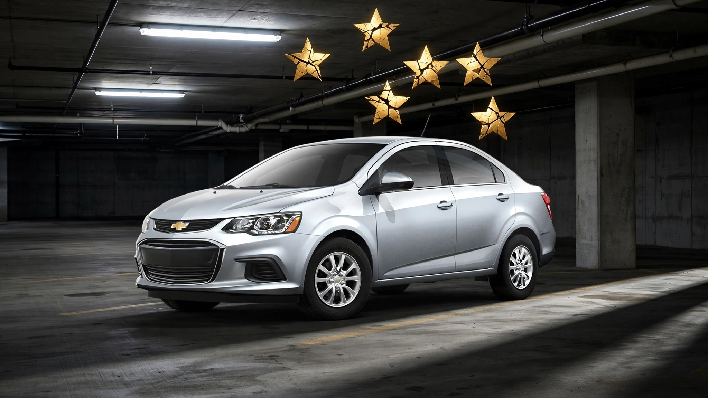

GM Spent $545 Million to Replace a Daewoo Deathtrap. The Death Rate Doubled.

By most accounts, the Chevrolet Aveo was a terrible car, a rebadged Daewoo Kalos assembled in South Korea that earned "Acceptable" in the IIHS frontal test and "Marginal" in all three remaining crash evaluations, with a roof that crumpled at just 3.09 times the car's own weight. When GM announced the Sonic as its replacement in 2011, the company pitched a real Chevrolet designed in Detroit and built in Michigan, a vehicle actually engineered to protect its occupants instead of merely enclosing them. Roughly $545 million went into retooling the Orion Assembly plant in Lake Orion for the job. IIHS responded by handing the 2012 Sonic a Top Safety Pick award, and NHTSA awarded it five stars across the board.[1][2]
FARS data from 2014 through 2023 paints a grimmer picture. Across the decade, the Sonic logged 494 occupant deaths in 655 fatal crashes, producing a fatality rate of 1.40 per 100 million vehicle miles traveled, a number that earns it the title of deadliest subcompact sold in America during that window. Its predecessor, the supposedly inferior Aveo? A rate of 0.69. GM's prize pupil kills at exactly twice the rate of the car it was built to make obsolete.[3]
Against the broader subcompact segment, the Sonic doesn't merely lag behind segment leaders but finishes dead last in a field of eleven. Honda's Fit manages 0.72 per 100 million VMT while Toyota's Yaris runs 0.76, and even the bargain-basement Mitsubishi Mirage posts a 0.40, which amounts to less than a third of what the Sonic delivers per mile driven. Among GM's own small cars, only the Korea-sourced Spark approaches the Sonic at 1.28, a data point that doesn't bolster the case for in-house engineering superiority so much as it quietly demolishes it.
An obvious rebuttal: fleet size. At 306,000 registered vehicles, the Sonic had nearly twice the Aveo's 175,000 fleet, creating more total exposure on American roads and pushing the raw death count higher. But the rate already divides by vehicle miles traveled, which means a bigger fleet doesn't inflate the per-mile denominator so much as it sharpens statistical confidence that 1.40 is a durable number rather than a rounding error. Demographics offer a more creative defense, the possibility that the Sonic attracted younger or more reckless buyers who pushed the rate up through behavior rather than engineering. FARS toxicology data undercuts that theory cleanly: Sonic drivers involved in fatal crashes tested positive for some form of impairment at 20.0%, compared to 22.0% for Aveo drivers. Sonic owners were marginally more sober and still died at double the rate.
Buried in the crash-level data is a small consolation that manages to make the overall picture worse. In a fatal crash involving an Aveo, the vehicle's occupant died 89% of the time, while in a Sonic crash that number drops to 75.4%, which means yes, in the narrowest possible reading, the Sonic proves more survivable once you are already participating in a fatal crash. But the Sonic participates in so many more fatal crashes per mile driven that the net effect is catastrophic, a textbook case of solving the wrong problem at great expense. GM poured half a billion dollars into making a car that absorbs barrier impacts more gracefully while doing nothing about the conditions that put it in those impacts in the first place.
None of the crash-test results were fabricated or misleading in any direct sense, and IIHS noted in 2012 that the Sonic's roof withstood 5.37 times its weight versus the Aveo's 3.09, a legitimate and measurable structural improvement that earned top marks in every category where its predecessor had scored "Marginal."[2] All of this held up inside the controlled environment where it was measured. A 2,800-pound sedan striking a fixed barrier at 40 mph is a repeatable engineering exercise with known inputs and measurable outputs. A 2,800-pound sedan getting T-boned by a 5,500-pound Silverado at 45 mph in an uncontrolled intersection is physics with a body count, and between 2014 and 2023 the average passenger vehicle on American roads gained roughly 300 pounds while subcompacts gained almost none, widening a weight mismatch that the IIHS test protocol has never been designed to capture.
GM discontinued the Sonic after the 2020 model year, a decision the market had already rendered for them when annual sales collapsed from 96,000 units in 2014 to fewer than 15,000 in its final year. Around 300,000 remain registered. People still commute in them, still run errands, still share lanes with vehicles that outweigh them by a full ton or more, still trust that the five-star sticker on the window means something about their odds on the actual road instead of their odds against a concrete wall in a government lab.
If you own one: Check your VIN at nhtsa.gov/recalls for outstanding recalls, including a prior campaign for loss of power steering assist. Understand that the rating tested your car against a fixed barrier at a controlled speed, not against a Tahoe running a red light, and that your best defense in any subcompact is not the car's crumple zone but the space you keep between yourself and everything heavier than you.
Sources & References
- NHTSA, 5-Star Safety Ratings: 2016 Chevrolet Sonic. nhtsa.gov
- Automotive Fleet, “Chevrolet Sonic Named IIHS ‘Top Safety Pick,’” 2012. automotive-fleet.com
- NHTSA, Fatality Analysis Reporting System (FARS), 2014–2023. nhtsa.gov
- IIHS, Vehicle Ratings: Chevrolet Sonic. iihs.org